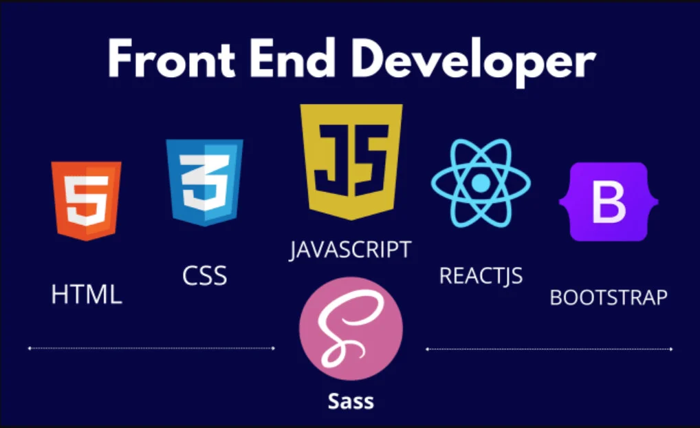

↗
↗
Sécurité web : apprendre dans le bon cadre
Les réflexes essentiels pour auditer un projet web avec autorisation, méthode et responsabilité.
Lire l’article →Des explications concrètes sur le code, les systèmes et la cybersécurité — pensées pour apprendre, pratiquer et garder une longueur d’avance.
➜ whoami
curious_builder
➜ cat mission.txt
Make complex things feel possible.
➜ status
➜ _
Des articles structurés, du contexte et des exemples qui vont droit au point.
On passe de la théorie à la pratique : code, outils, réflexes et bonnes habitudes.
Un espace personnel pour explorer ce qui se cache derrière les interfaces.
Choisis un sujet et commence par l’article qui t’intrigue le plus.
↗
Les réflexes essentiels pour auditer un projet web avec autorisation, méthode et responsabilité.
Lire l’article →
↗Une méthode concrète pour passer d’une idée à un site statique propre, versionné et publié.
Lire l’article → ↗
↗
Découvrez le parcours, la vision et les passions de H@CKERBOY, créateur du blog.
Lire l’article →La Masterclass Python : De Zéro à H@CKER. Un langage simple, puissant et polyvalent — idéal pour débuter et aller loin !
Lire l’article → ↗
↗
JavaScript rend vos sites interactifs ! Découvrez ses bases, ses usages et des exemples concrets.
Lire l’article →Le CSS permet de styliser vos pages web : couleurs, mise en page, animations... Découvrez ses bases et ses astuces !
Lire l’article →Le HTML est la fondation de toute page web. Structure, balises essentielles et bonnes pratiques pour bien démarrer.
Lire l’article → ↗
↗
L'informatique, c'est bien plus que des ordinateurs : découvrez ses domaines, son histoire et son impact sur notre quotidien.
Lire l’article →↗
Découvrez la vraie définition d'un hacker, ses motivations et les mythes qui l'entourent.
Lire l’article →Aucun article ne correspond à ta recherche.
Des étapes concrètes, des preuves et les leçons retenues sur le chemin.
H@CKERBOY a remporté la médaille d’or dans la catégorie Dev Web du MaliBots Challenge 2025. Une reconnaissance de la créativité, de l’engagement et de la performance démontrée pendant la compétition.
Voir le parcours ↗
 MaliBots Challenge · DjoniFab × Université Bazo
MaliBots Challenge · DjoniFab × Université BazoH@CKERBOY est un carnet de bord pour rendre la technologie plus lisible. Ici, on démonte les concepts, on teste les idées et on partage ce qui peut aider quelqu’un à avancer.
Découvrir le parcours →Demande une piste sur Python, JavaScript, HTML, CSS ou la cybersécurité.